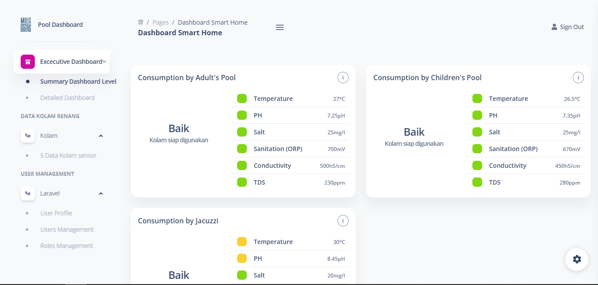

My Portfolio

Elladine Official Website
A website that contains products in Elladine stores such as hijab and other accessories.
he website has features to add, edit, and delete products.

Detection Water Apps
Detection Water is water that checks temperature levels and salt levels using a water detection tool
connected to a website to store data that has been detected by the pool.

Personal Portfolio
The personal portfolio is highly responsive using vue javascript and tailwind css.